Stochastics
VIMC modelling groups produce stochastic data for us, which is currently 200 runs of their models varying key parameters, to express uncertainty. These files get uploaded to Box, and the groups are provided with guidance to produce files that we can process easily.
Stoner can process these stochastic files into a standard format to
make the files more predictable to work with. For a good compromise
between ease-of-use, performance and compression, we have used the
Parquet format and the arrow package. This
vignette covers how to process the data, how to create a central from a
set of stochastics, how to produce some graphs of the stochastics for
quick diagnosis, and also how to use the stochastic explorer, a local
shiny app for exploring and comparing stochastic datasets.
Creating standard stochastic files
This has superseded stoner_stochastic_process, which
will be removed and undocumented soon.
Here, we are mostly likely working with two folders or network
shares, one of which contains the stochastics that groups have uploaded,
and the other is a destination where we want to write our standardised
files. These I’ll call in_path and out_path.
The out_path folders I am assuming will be only written to
by stoner; paths and filenames will adhere to the following format:-
Within the root of the share we will have the touchstone, without a version. At time of writing, we have
202310gaviand202409malaria. I am not anticipating having separate stochastics for separate versions of the stochastics at this point.Within those touchstone folders, we have more folders in the form
Disease_Modelling-Group- such asCOVID_IC-GhaniorYF_IC-Garske. The groups and diseases set up here copy the historic contents of the Montagu database.Within each of these folders, we will be writing a file per country per scenario, containing all run_ids, named in the format
Modelling-Group_scenario_country.pq- for example,IC-Garske_yf-routine-ia2030_KEN.pq. If we also create a average (central) of the stochastics (see later), that will be calledIC-Garske_yf-routine-ia2030_central.pq, containing all the countries, and no run_id.Finally, in the root of the standardised folder, we’ll keep a file
meta.csvto describe in one file the range of stochastic data we have by touchstone, disease, group and scenario, and for each the outcomes and countries provided. This is useful for speeding up the stochastic explorer shiny app, but also may be a useful quick reference of our inventory in general.
Example Usage - One file per scenario
Examples used so far are in the scripts folder in the
root of the stoner repo - files such as
process_stoch_202310gavi.R. Here is an example of the
Yellow Fever standardisation:-
scenarios = c("yf-no-vaccination", "yf-routine-bluesky",
"yf-routine-campaign-bluesky", "yf-routine-campaign-default",
"yf-routine-campaign-ia2030", "yf-routine-default",
"yf-routine-ia2030")
stoner::stone_stochastic_standardise(
group = "IC-Garske",
in_path = file.path(base_in_path, "YF-IC-Garske"),
out_path = file.path(base_out_path, "YF_IC-Garske"),
scenarios = scenarios,
files = "burden_results_stochastic_202310gavi-3_:scenario Keith Fraser.csv.xz")base_in_path and base_out_path are defined
elsewhere, and are my drive mappings to the incoming, and destination
network shares. We’ll briefly talk about those later.
We provide the group name, the paths to the uploaded files and the
destination we want to write files to. Note that the
in_path is not managed, and might be arbitrary - here it
has dashes instead of underscores; but the out_path, we
need to be careful to get right, in the format disease then
underscore then the modelling group.
We then provide the vector of scenarios, and because this group
follow the guidance very well, they have included the exact scenario in
the filenames. We can therefore use the :scenario glob in
the files argument, and stoner will handle each of the
seven scenarios in the right order.
Example Usage - One file per run
Other groups provide a file per run, which is also fine. Here, we can
specify an additional index parameter, usually
1:200, and use the glob :index in the files
argument. Here is an example of that - but note for this group, they
didn’t quite include the scenarios exactly in the filenames, so
we have to explicitly name the files, rather than using the
:scenario glob. This is still yellow fever, so using the
same scenarios vector as before.
stoner::stone_stochastic_standardise(
group = "UND-Perkins",
in_path = file.path(base_in_path, "YF-UND-Perkins"),
out_path = file.path(base_out_path, "YF_UND-Perkins"),
scenarios = scenarios,
files = c("stochastic_burden_est_YF_UND-Perkins_yf-no_vaccination_:index.csv.xz",
"stochastic_burden_est_YF_UND-Perkins_yf-routine_bluesky_:index.csv.xz",
"stochastic_burden_est_YF_UND-Perkins_yf-routine_campaign_bluesky_:index.csv.xz",
"stochastic_burden_est_YF_UND-Perkins_yf-routine_campaign_default_:index.csv.xz",
"stochastic_burden_est_YF_UND-Perkins_yf-routine_campaign_ia2030_:index.csv.xz",
"stochastic_burden_est_YF_UND-Perkins_yf-routine_default_:index.csv.xz",
"stochastic_burden_est_YF_UND-Perkins_yf-routine_ia2030_:index.csv.xz"),
index = 1:200)The subtle difference is that the group used underscores instead of
dashes in the scenario names. So here, I have to be careful and ensure
the order of files matches the order of
scenarios manually. After that, the :index
glob, and the index argument deal with the fact we have 200
files per scenario.
Example Usage - One file per country
If groups want to supply a file per country, then at present, we need
them to do so including the country in their uploads as normal, but
number their files using the index method above, rather
than having country names or ISO codes in the filename. We could do
better if this proves to be a popular method.
Updating the meta-data
Having run stone_stochastic_standardise and made changes
to the structure, to enable the stochastic explorer shiny app to use the
data (and to keep a useful file up-to-date), we need to run a command to
update the metadata.
stoner::stone_stochastic_make_meta(out_path)which will run for a few seconds, recreating the entire file. The columns are touchstone, disease, group, scenario, countries and outcomes; the first four will be single elements, whereas countries and outcomes will be semi-colon separated lists.
Advanced Usage
You shouldn’t have to worry about these things, but this is just so that you know they are there. We have some historic fixes that have made it possible for us to process some groups’ stochastics with some formatting issues, rather than asking them to resubmit. These fixes are enabled by default; they won’t do anything bad for groups where the fixes are not relevant, and are strictly required for the groups where they are relevant.
The Rubella Fix
An argument rubella_fix, by default TRUE,
deals with the fact that rubella groups have traditionally uploaded with
different outcome names. Instead of deaths,
rubella_deaths_congenital, and instead of
cases, rubella_cases_congenital. Some groups
additionally supplied the rubella_infections outcome.
The rubella_fix argument causes stoner to omit
rubella_infections, and rename the others to
deaths and cases respectively, standardising
them against the other diseases.
The Missing Run Id fix
One group also is in the habit of sending us one file per run_id, but
omitting the run_id field from their uploads. The argument
missing_run_id_fix, default TRUE lets Stoner
spot this, and specifically if index is 1:200
(ie, we are expecting 200 uploads), it will transplant the index into
the file to allow processing to be done normally.
Other Considerations:
Stoner rounds of all the outcomes, (deaths, cases, dalys, yll and cohort_size) to be integer-like, which can create some confusion with small countries with a very small number of cases, but we expect those confusions. Some groups still provide us with 16 decimal places, which creates some problems, and the integer-like rounding is in the guidance.
Note that for some groups with very large files (especially those with 16 decimal places), the processing takes a lot of memory - towards 128Gb. So run these on a large machine or perhaps a cluster node.
More about the paths
If at all possible, you should perform Stoner tasks on a computer within DIDE, connected with a cable. Stochastic processing involves large volumes of data, and ZScaler from outside, or even WiFi from inside may not copy that well with these tasks.
On a DIDE Windows machine, in_path and
out_path can be fully-qualified paths to DIDE network
shares, which only members of the VIMC team have access to. This is
probably the easiest case.
On Linux or Mac, you have to mount the DIDE network shares, providing
your DIDE details, and it is up to you what you call your local
mountpoints. On linux, they may start with /mnt/ and on Mac
/Volume/. Talk to IT, if you need help setting up those
mounts.
And lastly, if you’re on a windows machine but for some reason need to work externally, then use ZScaler, map drive letters to the network shares, and pass those in, but as we said, this is not recommended as it’s not particularly stable. If at all possible, use an internal machine to do the heavy data work, and remote desktop into that if you need to be external.
Creating a central estimate
For many groups, their central estimates are the average of their stochastic runs. Historically groups have provided their centrals before their stochastics, as a means of early review and detection of problems. Having standardised a group’s stochastic files, we can then generate an averaged central for a single touchstone, disease, group and scenario, with the following call:-
stone_stochastic_central(base, "202310gavi", "YF", "IC-Garske",
"yf-routine-campaign-ia2030")base here is the root of the share where our
standardised stochastic outputs have been put, and since those were
created by stoner, it knows how to build the paths correctly.
The result will be a new file in the form
group_scenario_central.pq so in this case
IC-Garske_yf-routine-campaign-ia2030_central.pq which
matches the other standardised filenames, except for the country; this
one central file will contain all countries.
The default averaging function is mean - if we really
want the median of the stochastics, then add the argument
avg_method = mean to the function call. Note the lack of
quotes - we are sending a function, not the name of a function.
Creating stochastic graphs
The stone_stochastuc_graph function can dig out a range
of different graphs. If you want to explore the stochastics
interactively, then try the shiny app (below) - but for programmatic
plotting, read on.
Basic burdens.
With base set to the root of the share where we are
putting our standardised outputs, here is an example function call, and
the graph that it produces.
stone_stochastic_graph(base, "202310gavi", "YF", "IC-Garske",
"KEN", "yf-no-vaccination",
"deaths")
The grey lines are each and every stochastic run. Red is the mean,
and green is the median of the stochastics. The thicker black lines are
the 5% and 95% quantiles. We can toggle the presence of each of those
line types with the optional arguments include_stochastics,
include_quantiles, include_mean and
include_median, which can be set to FALSE, or
left as the default TRUE.
Burden Differences
If we specify two scenarios instead of one, then the plot will be the
burden of the first scenario, subtract the burden of the second - i.e.,
the difference made by applying a scenario. Below is an example - I’ll
also add the log = TRUE argument to get a logged
y-axis.
stone_stochastic_graph(base, "202310gavi", "YF", "IC-Garske",
"KEN", c("yf-no-vaccination", "yf-routine-campaign-ia2030"),
"deaths", log = TRUE)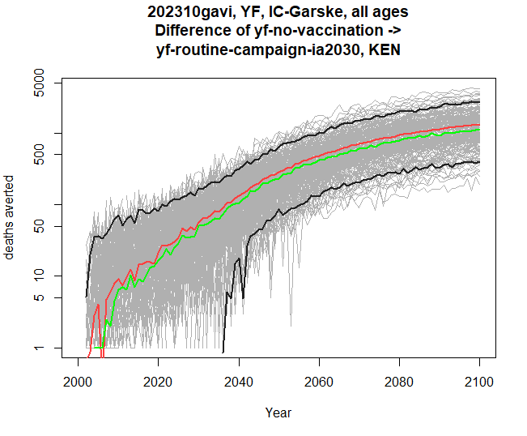
The y-axis now reads “deaths averted” instead of just deaths.
Comparing touchstones
You may have noticed that stone_stochastic_graph when
you run it causes a plot to appear, but is actually returning you a list
of plots - one so far. If we specify two touchstones, then stoner will
instead return us a list of two graphs - assuming that the same disease,
group and scenarios are present in both touchstones. The y-axis will be
matched between the two, so we can see the pair of graphs for
comparison.
Below is an example returning to just a single scenario, although you can provide two and compare burden differences across two touchstones too. Here I am collecting both resulting graphs, and then plotting them one by one.
res <- stone_stochastic_graph(base, c("202110gavi", "202310gavi"), "YF", "IC-Garske",
"ETH", "yf-no-vaccination",
"deaths", log = TRUE)
res[[1]]
res[[2]]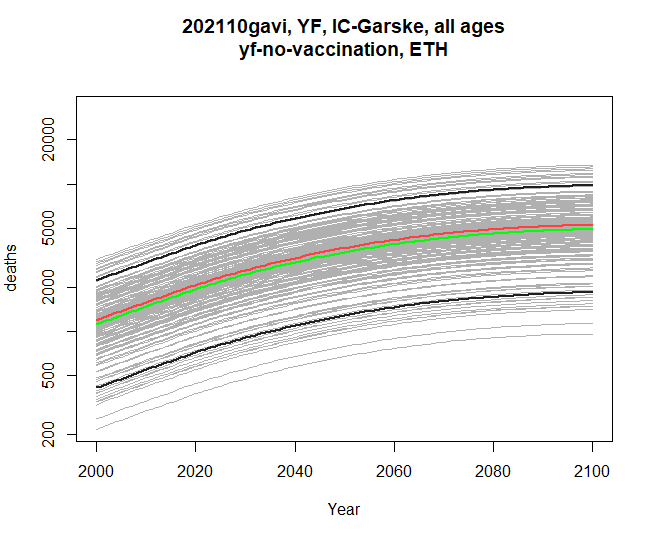
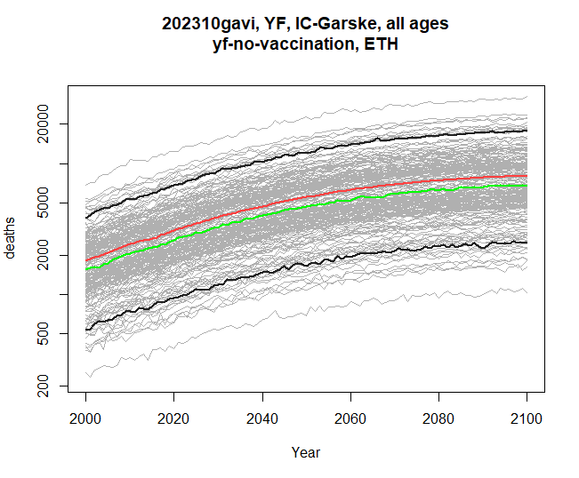
Comparing modelling groups
Similarly, within the same touchstone, we can compare two modelling groups, with either a single scenario, or pair of scenarios. The disease, scenarios and outcomes must be compatible between the two groups. Here’s a comparison of burden difference:
res <- stone_stochastic_graph(base, "202310gavi", "YF",
c("IC-Garske", "UND-Perkins"),
"UGA",
c("yf-no-vaccination", "yf-routine-default"),
"cases")
res[[1]]
res[[2]]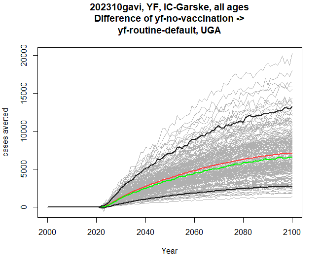
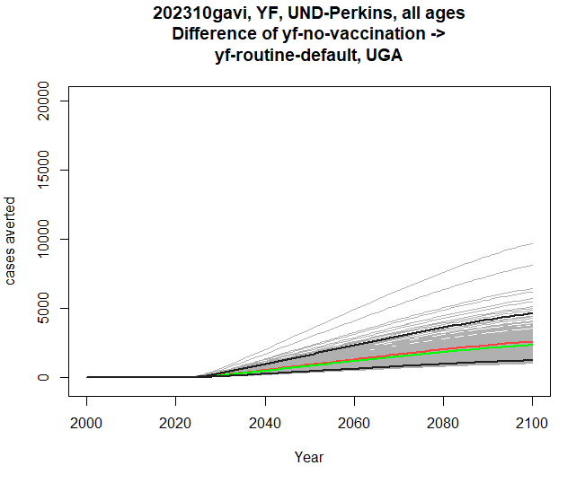
Filtering by age
The stochastic data contains both years and ages. Our plots so far have been using time on the x-axis, and all the ages have been summed together for each calendar year. We can also filter by age before plotting. The example below filters to ages between 0 and 4 inclusive (ie, under 5 year-olds).
res <- stone_stochastic_graph(base, "202310gavi", "YF", "IC-Garske", "UGA",
"yf-no-vaccination", "deaths", filter = 0:4)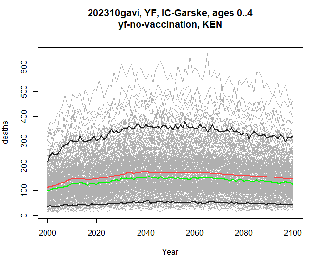
Plotting by birth cohort
The by_cohort parameter lets us subtract age from year
before plotting, so we can see burden specific to people who were born
in a certain year, rather than the previous plots, which have all
treated the x-axis as calendar year.
res <- stone_stochastic_graph(base, "202310gavi", "YF", "IC-Garske", "UGA",
"yf-no-vaccination", "deaths", by_cohort = TRUE)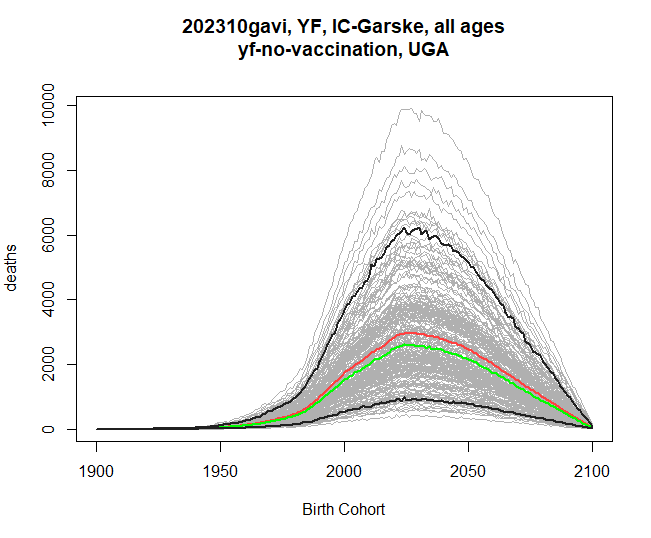
Age on the x-axis
If instead we want to see how burden affects people of different ages
throughout the time series, we can set xaxis to
age (its default is time).
res <- stone_stochastic_graph(base, "202602yf", "YF", "IC-Gaythorpe", "UGA",
"yf-no-vaccination", "deaths", xaxis = "age")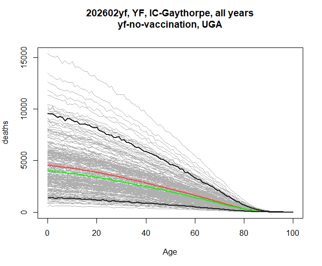
This sums over the entire range of years. If xaxis is
age, then the filter argument will let you select which
years are to be included. This example shows the burden by age in the
years 2040-2050.
res <- stone_stochastic_graph(base, "202602yf", "YF", "IC-Gaythorpe", "UGA",
"yf-no-vaccination", "deaths", xaxis = "age",
filter = 2040:2050)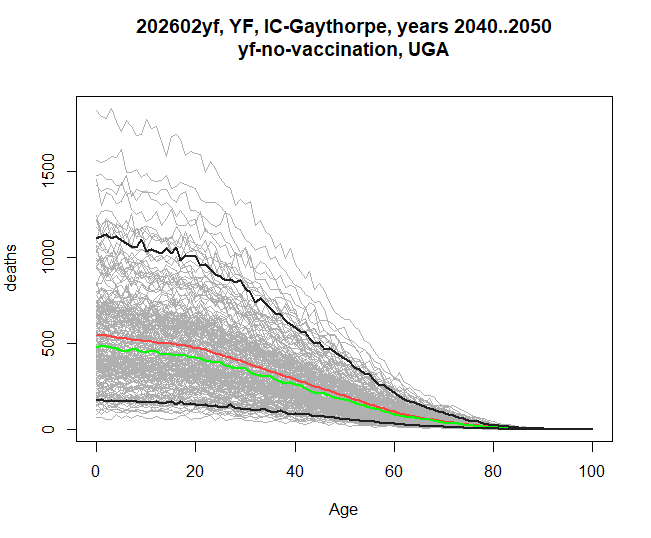
And if we additionally set the by_cohort flag, then we
are asking for the burden breakdown by age, for people who were born
within the filtered range, rather than selecting a calendar year
range.
res <- stone_stochastic_graph(base, "202602yf", "YF", "IC-Gaythorpe", "UGA",
"yf-no-vaccination", "deaths", xaxis = "age",
filter = 2040:2050, by_cohort = TRUE)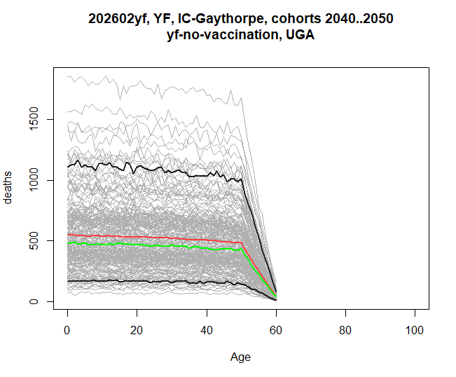
The graph has this shape because the stochastics here only continue until 2100, hence the last 60-year olds will be born in 2040.Including data from packit.
Lastly, if a central burden estimate has been included in a packit in Montagu’s reporting portal, we can include that on a graph by specifying the id, and the name of the file within that packit. For example, this graph shows both the stochastics from the file share, and the central from a packit, which is drawn in blue.
res <- stone_stochastic_graph(base, "202602yf", "YF", "IC-Gaythorpe", "UGA",
"yf-no-vaccination", "deaths",
packit_id = "20260421-090519-e4a90228",
packit_file = "burden-estimates-disaggregated.rds")
Visit <https://montagu.vaccineimpact.org/packit/device> and enter code DNLH-NMRL
✔ Waiting for response from server [10.6s]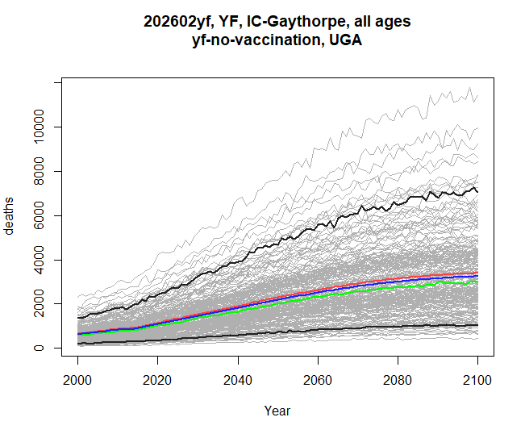
And here’s an example of a burden difference graph, showing how much
difference the yf-routine-default scenario makes in both
the stochastics, and the central from packit.
res <- stone_stochastic_graph(base, "202602yf", "YF", "IC-Gaythorpe", "UGA",
c("yf-no-vaccination", "yf-routine-default"), "deaths",
packit_id = "20260421-090519-e4a90228",
packit_file = "burden-estimates-disaggregated.rds")
Visit <https://montagu.vaccineimpact.org/packit/device> and enter code MBWV-NBBC
✔ Waiting for response from server [10.9s]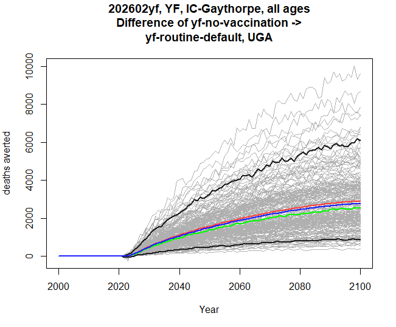
## The stochastic explorer shiny appAll of the graphs above (except currently the packit graphs) can be
visualised interactively using a shiny app that is part of stoner. We
call it providing the path to the root of the standardised stochastic
data, where the meta.csv file should also be found.
stoner::stochastic_explorer(path)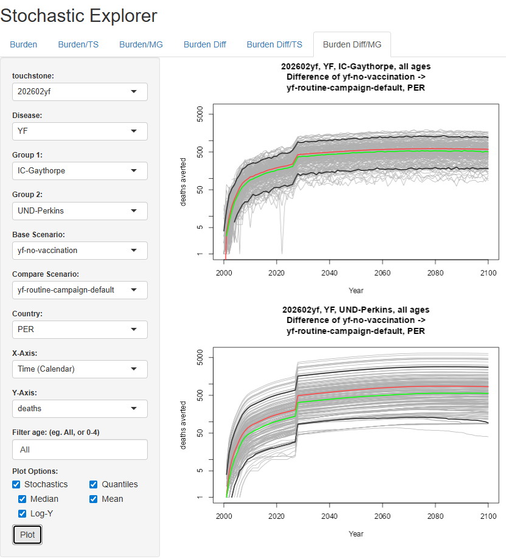
The features in the GUI closely map onto the parameters for
stochastic_graph in the following ways:
- The tabs along the top let you choose a single graph, a comparison by touchstone, or a comparison by modelling group, firstly for simply burdens, and secondly for differences between scenarios. Different tabs therefore cause different components in the sidebar to be available.
- One or two touchstones, groups, or scenarios will be available depending on the tab.
- Whether the x-axis is time or age, and whether by cohort, are all selected in the x-axis dropdown.
- The filter text, whether for time or for age, is a comma-separated
list of numbers or dash-separated ranges. So in a contrived example,
0-5,50,95-100would select the very young, very old, and exactly 50-year olds.